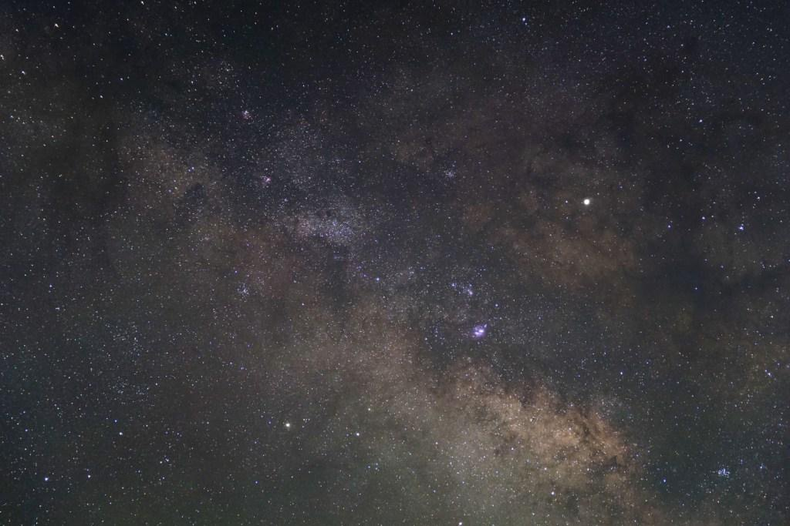
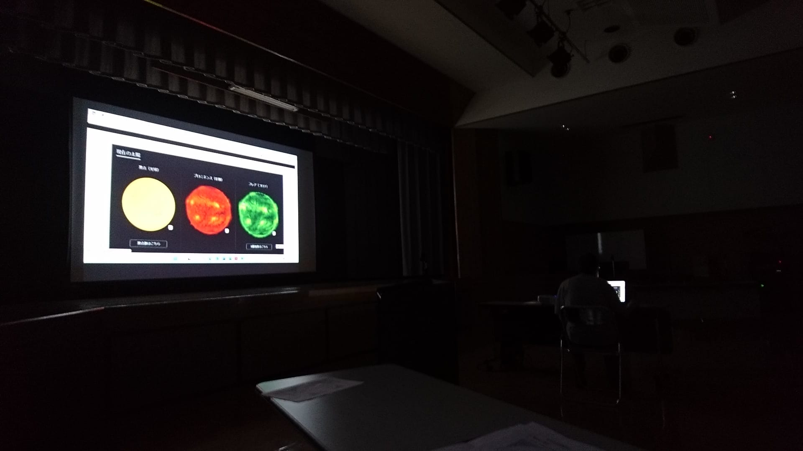
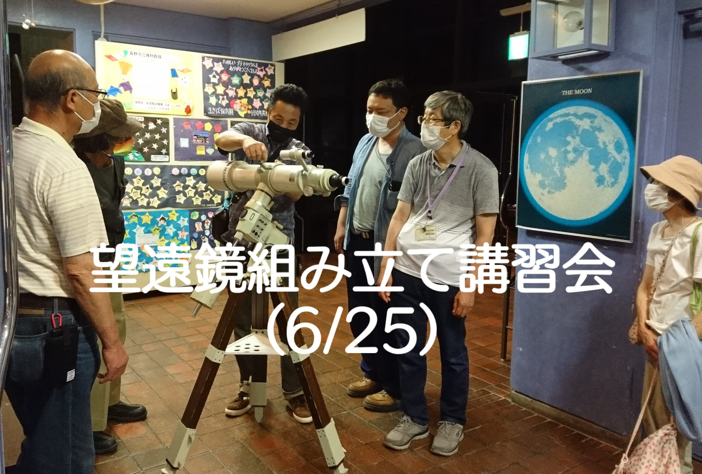
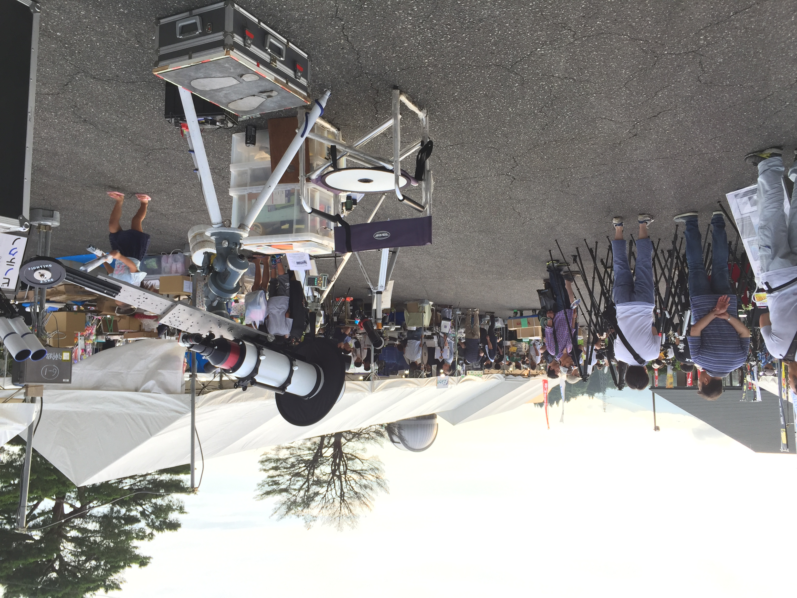
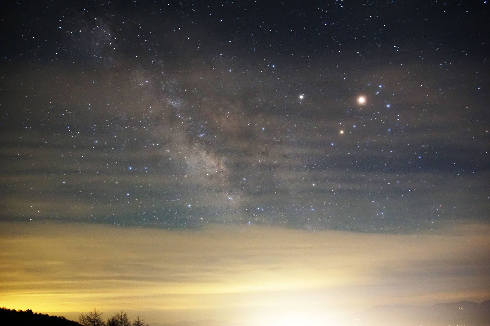
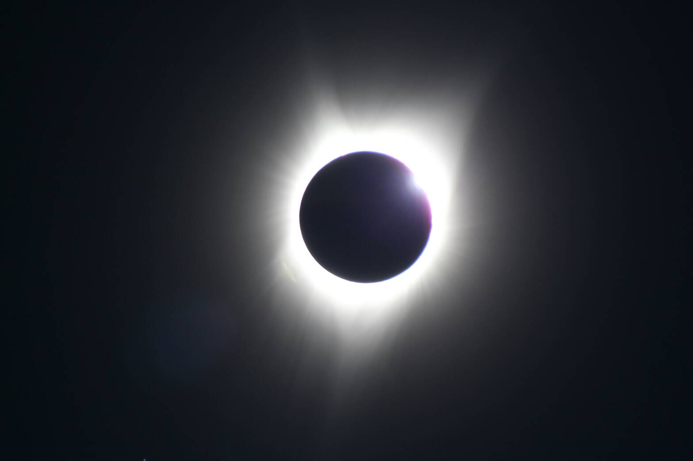
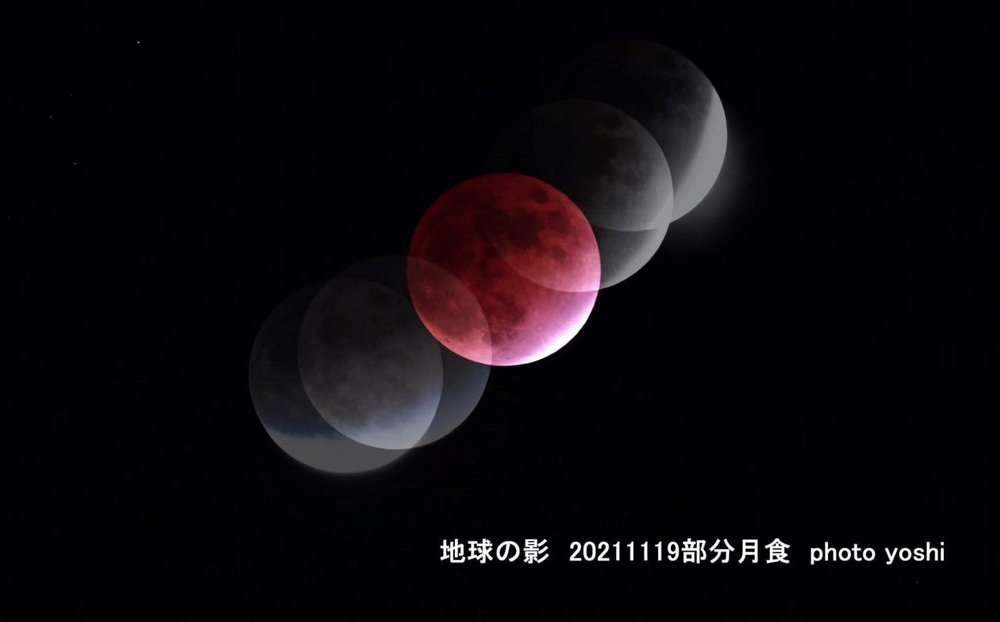
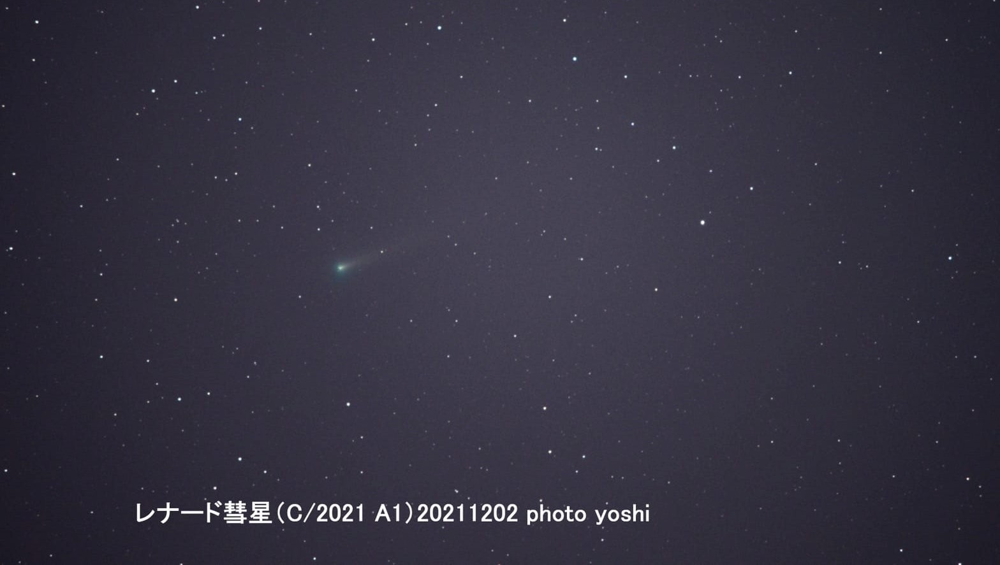

| 【アクセス数カウンタ】 |
Copyright 2021 しなの星空散歩会 きらきら
since 17,May,2021

天の川中心付近

大岡公民館（室内解説）

望遠鏡組み立て講習会

胎内星まつり

富士見台

皆既日食

部分月食

レナード彗星
しなの星空散歩会きらきらは、長野県長野市を拠点として活動する天文同好会です。
星空観察会や天体観測、望遠鏡を使った観望会などを通じて、
宇宙や星空の魅力を多くの方へお伝えしています。
長野県は標高が高く空気が澄んでいるため、
全国的にも星空観察に適した地域として知られています。
戸隠高原や鬼無里、高ボッチ高原、美ヶ原高原など、
美しい星空を楽しめる観測地が数多く存在します。
当会では長野市周辺を中心に、 天文イベントや観望会の開催・協力を行っています。
《連絡先》
e-mail:kirakirashinano@gmail.com(件名にきらきらと明記)| 【アクセス数カウンタ】 |
since 17,May,2021